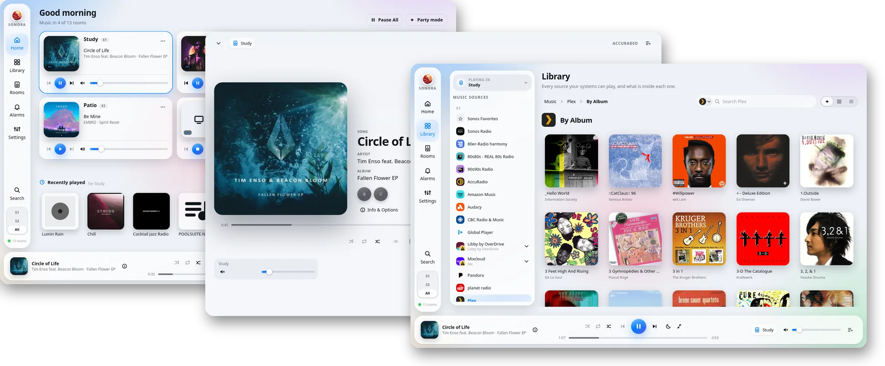
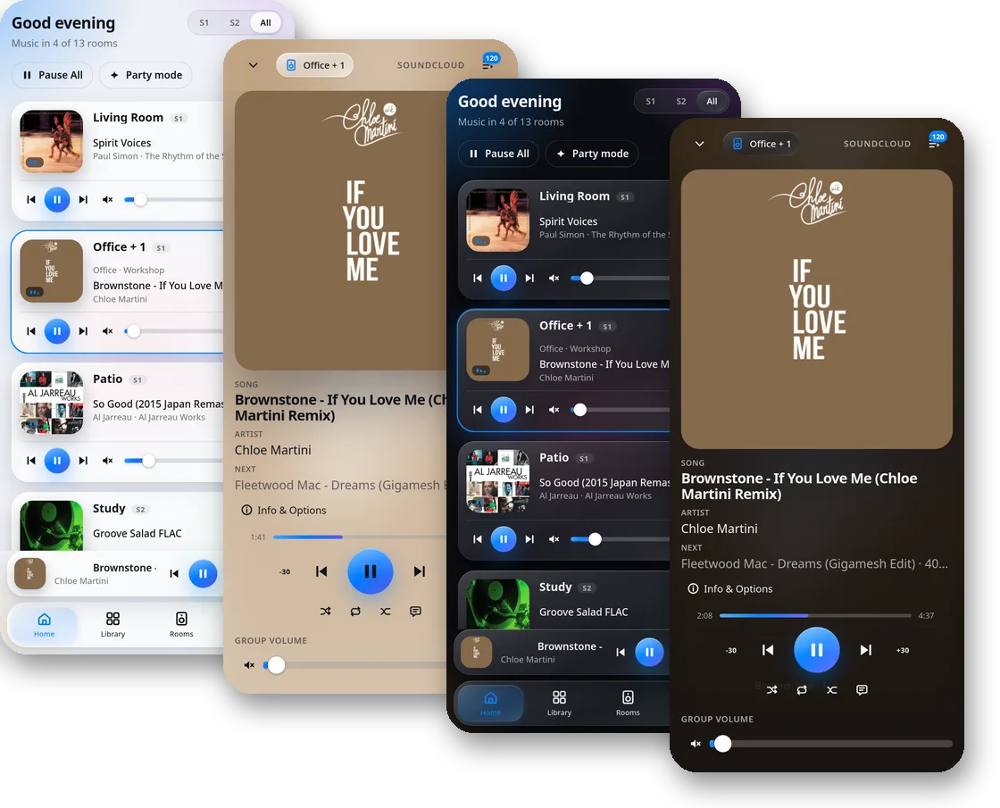
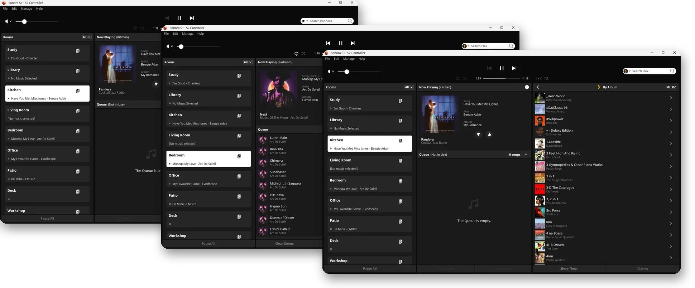
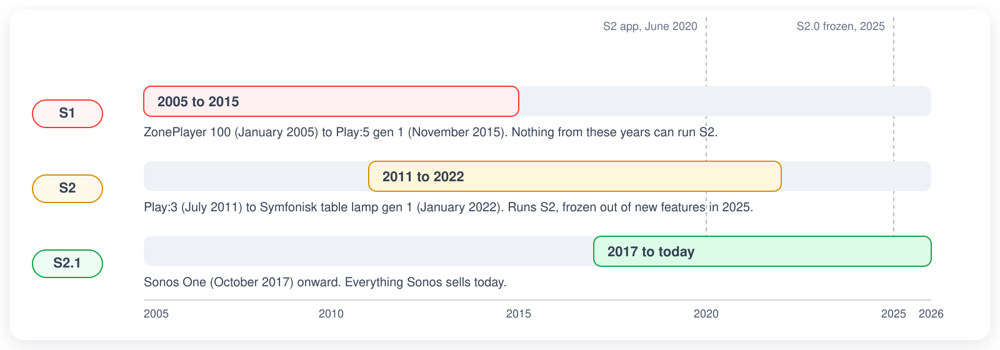

S1 and S2 together
Every Sonos speaker ever made, from one app. Each system keeps its own groups and music services, as Sonos requires.
A self-hosted web controller for S1 and S2 systems. It runs on a small computer in your home and works in any web browser, on any screen. Linux finally gets a Sonos controller.
Sonora is free software. Not affiliated with Sonos™.

Most of what you do day to day in Sonos' own apps is here, plus a few things they never had. Setting up new speakers still happens in the Sonos app.
Every Sonos speaker ever made, from one app. Each system keeps its own groups and music services, as Sonos requires.
A phone, a tablet, a laptop, a wall-mounted screen. Nothing to install on them, and every layout adapts to its screen.
Faithful recreations of the Sonos Windows, Mac, and web apps, plus nine designs of its own. Or write your own theme.
Streaming services, your local library, Sonos Favorites, and every playlist you've built over the years.
Grouping, volume, EQ, sleep timers, and alarms, for every room in the house.
Play through the device in your hand as if it were one more room. Headphones on, music from your Sonos sources.
How every speaker is doing on your network, in plain words: which ones are fine, which to watch, and where the music cut out this week.
Which of your speakers can move to S2, which can't, and roughly what replacing them would cost.
Sonora talks to your speakers directly on your own network. Signing in to Sonos is optional, as it is in their apps.
Already have a VPN into your home network? Then Sonora works from wherever you are, with nothing exposed to the internet.
Sonora uses your browser's language, or the one you pick in Settings.
Licensed AGPL-3.0, so it stays free. Built by someone who uses it every day.
Every theme reflows for a phone. Open Sonora's address in your phone's browser, and add it to your home screen to have it a tap away.

Sonora's Windows and macOS themes recreate the classic Sonos desktop experience in a browser, and they've even been made responsive for mobile devices. They control S1 and S2 speakers under a single interface, and they bring full-screen desktop control to Linux, which Sonos never made a controller for.

Change the theme whenever you like.
Each one is a complete design, not just a new color scheme.
Want something else? You can build your own themes (or have your robot do it) and upload them to Sonora.
Sonos split its speakers into S1 and S2 in 2020, and into S2 and what Sonora calls "S2.1" in 2025. Sonora controls all three.
The originals, still going strong. Sonos' current app leaves them out, so they need the S1 app, or Sonora.
Speakers that met the 2020 hardware bar, controlled by the Sonos app.
The newest tier, and the only one that still gets new features from Sonos.

S1 and S2 rooms can't be grouped together, and each system keeps its own music service links. That's Sonos' wall, not Sonora's. The built-in upgrade advisor shows what moving everything to S2 would take.
Understand what hardware you would need to go all-in on S2 or S2.1, along with the approximate cost to do so.
Every device in the household and what it needs to reach S2: a software update, a replacement at its list price, or nothing.
| Room | Product | Why | S2 equivalent | US MSRP | Action |
|---|---|---|---|---|---|
| Kitchen | Play:5 (gen 1) | Cannot run S2 | Sonos Five | $599 | Buy now |
| Study | Connect (gen 1) | Cannot run S2 | Sonos Port | $499 | Buy now |
| Deck | Connect:Amp (gen 1) | Cannot run S2 | Sonos Amp | $799 | Buy now |
| Living Room | Play:1 | Upgradable | - | - | Update now |
| Bedroom | One | Running S2 | - | - | |
| Total to move this system to S2 | $1,897 | ||||
US list prices, checked Q4 2026. Prices can change, so confirm before buying.
Sonora runs on any always-on computer on the same network as your speakers. Even an older Raspberry Pi is plenty. Images are built for amd64 and arm64.
docker-compose.yml into a folder of its own.To update later, from the same folder:
Needs Home Assistant OS or a Supervised install. Phones and other computers can also open Sonora directly at http://homeassistant.local:50205. Home Assistant offers each new release as an app update.
For a machine you'd rather not run Docker on. You'll need Python 3.11 or newer, Node.js 20.19 or newer, git, and a whole lot of patience. Sonora then runs as an ordinary service.
The full steps, including a systemd unit to start it with the machine, are in the README.
No. Sonora is an independent project by a Sonos owner, and is not affiliated with or endorsed by Sonos, Inc.
No. Sonora talks to your speakers on your own network. Signing in to Sonos is optional, as it is in their apps, and only needed for the few things that live in Sonos' cloud.
Yes, and with S2 speakers in the same house. Sonora shows both systems side by side. You can't group an S1 room with an S2 room, since the speakers themselves don't allow it.
Most of the ones linked to your Sonos system, plus your local music library and Sonos Favorites. A few services, SoundCloud among them, refuse to link with apps like Sonora. You can still start them from a Sonos app and use Sonora's playback controls.
Any always-on Linux machine on the same network as your speakers: a home server, a NAS that runs Docker, Home Assistant, or a Raspberry Pi. Your phone and other computers then use it from their browsers.
Yes, over a VPN into your home network. Sonora is meant for your own network, so don't put it directly on the internet.
Nothing. Sonora is free software under the AGPL-3.0. If it's useful to you, you can support the project. That'd be dope.
Free, open source, and running in your home in a few minutes.